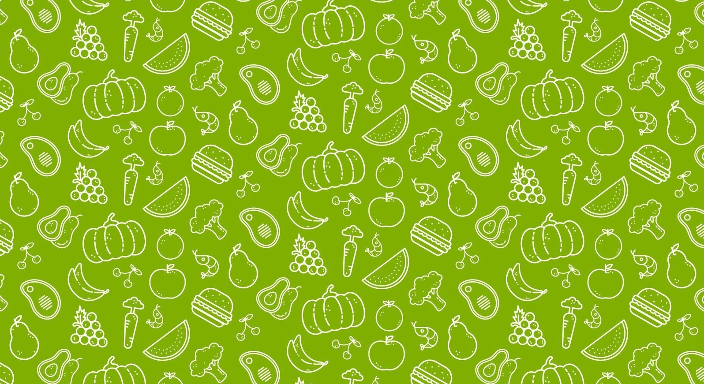

‹ Back

Start-up Fruits Food
Graphics
2015
As a Designer I did...
- With the rise of social media, the brand sought to engage a broader audience and strengthen its connection with customers. My role was to extend and amplify product communication across both digital and print channels:
- Designed printed materials to support brand visibility and in-store communication.
- Developed and formalized healthy recipes featuring the products, reinforcing their nutritional value and versatility.
- Produced and updated monthly 'daily meal' content to maintain consistent engagement and inspire customers with fresh ideas.